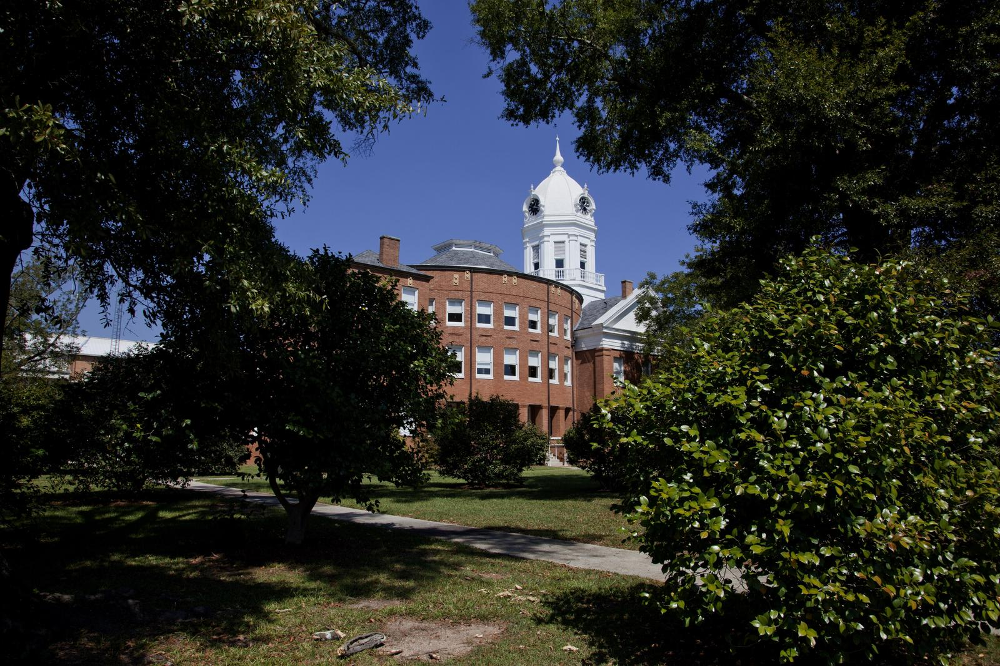
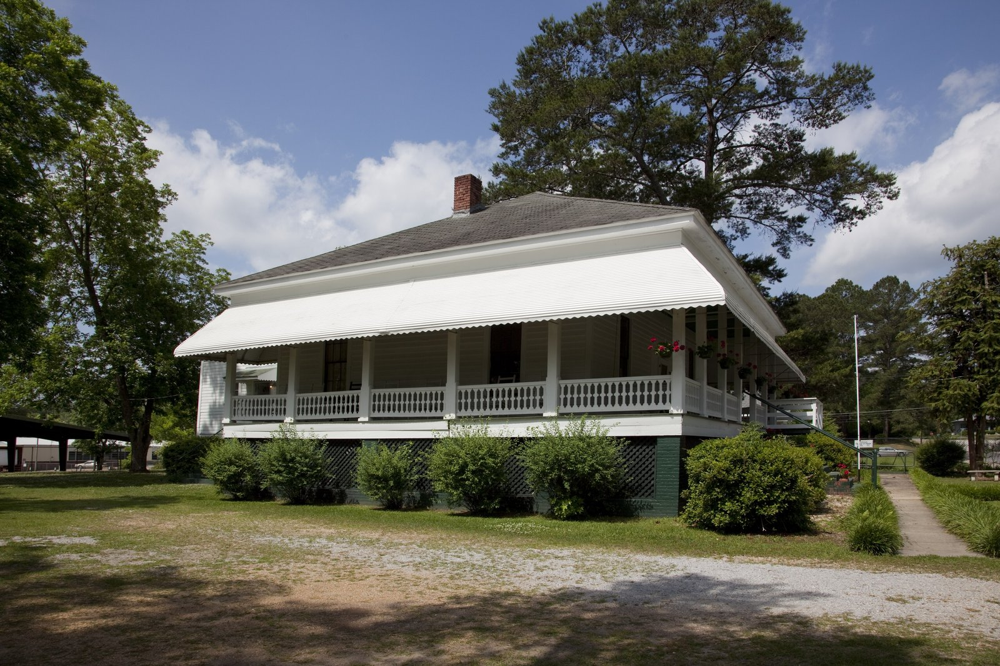
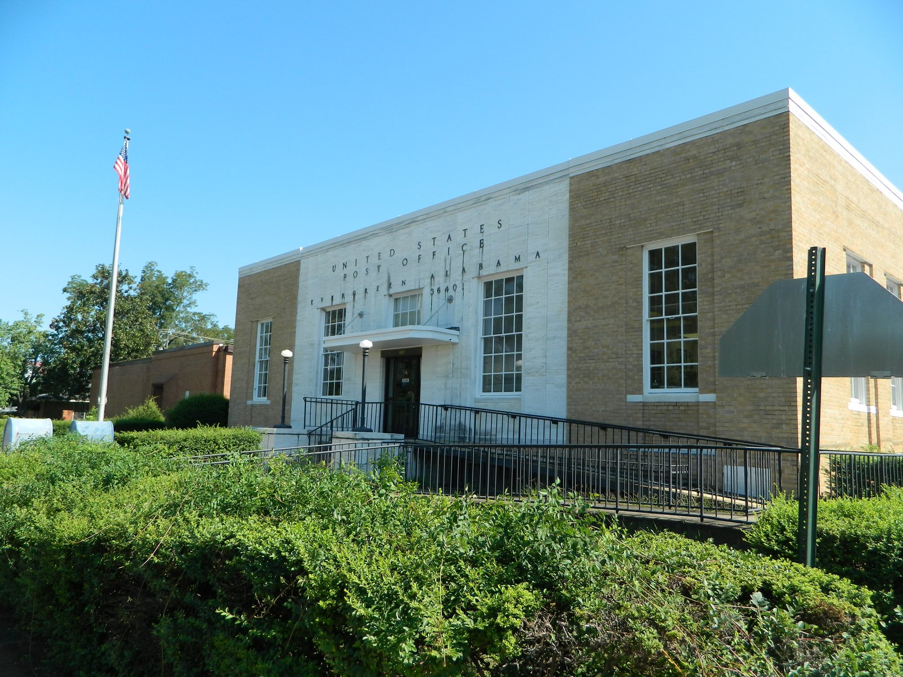
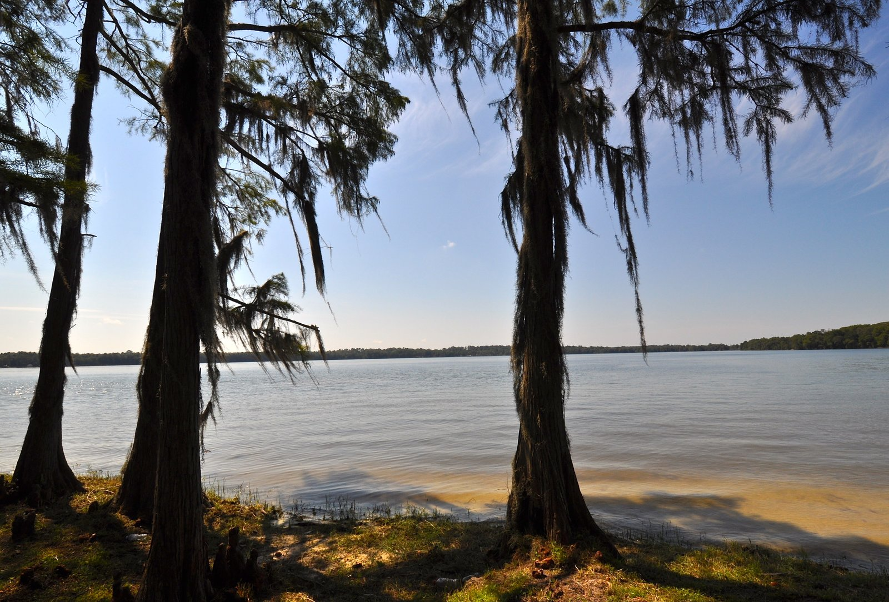
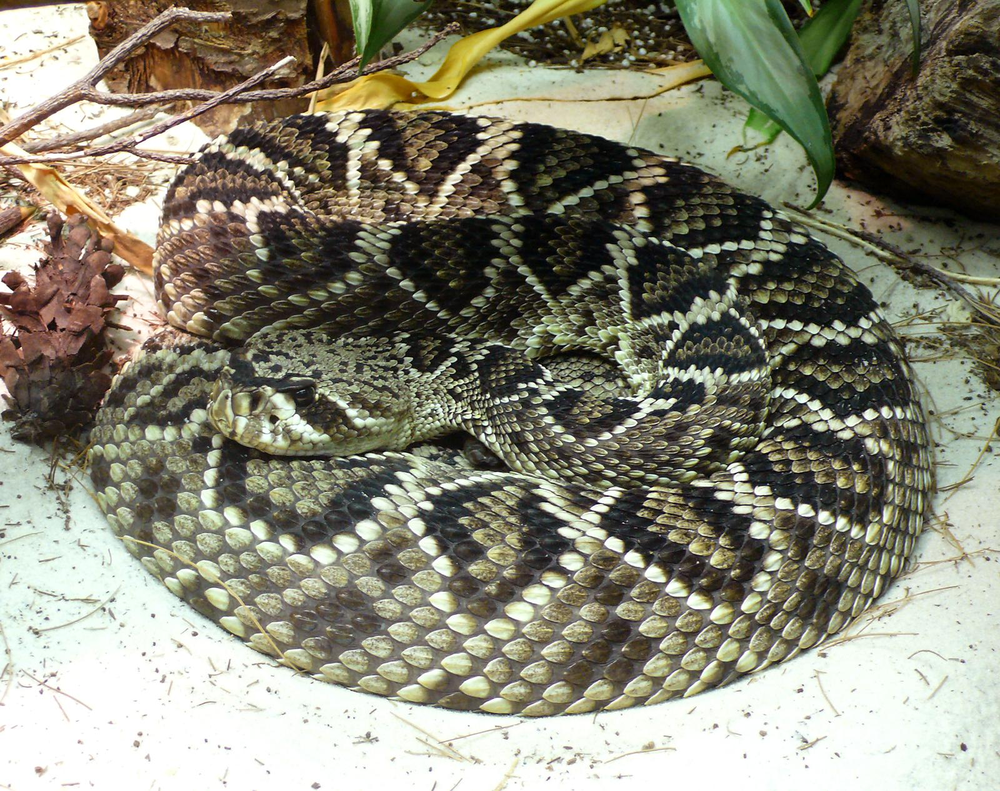
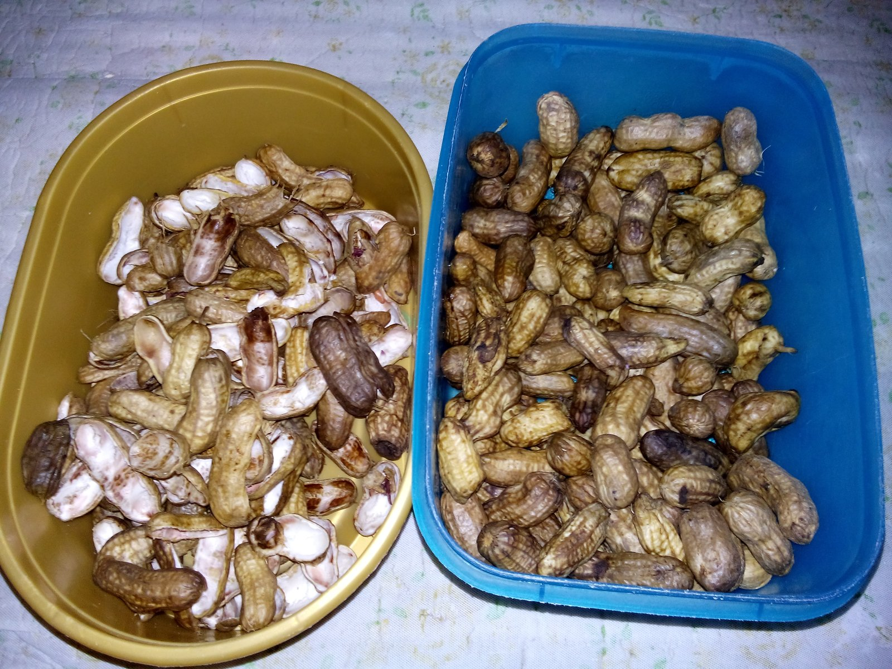
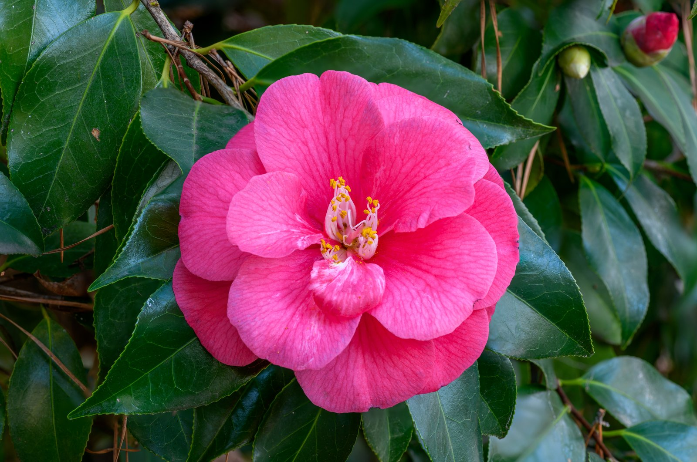
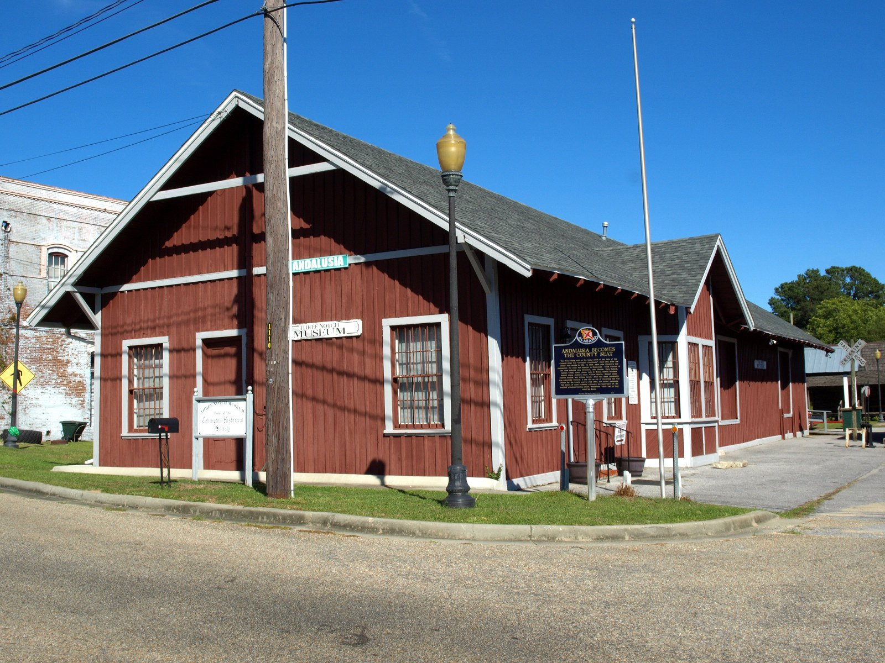
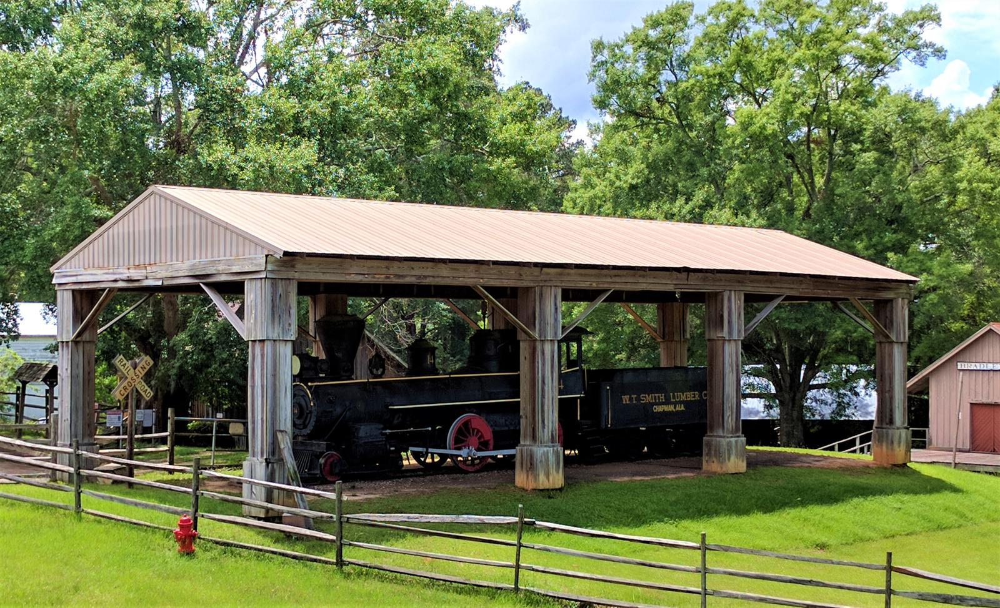

Cover photo: Blue Lake, Conecuh National Forest, Alabama Will Thomas · CC BY-SA 3.0 · Wikimedia Commons
Travel & Place · A Writing Sample
9 Small Towns in South Alabama Worth the Detour
by Wade Lee Brower Jr
Most folks pass through South Alabama on their way to somewhere else — the Gulf beaches, mostly, straight down Highway 331 or Interstate 65 with the cruise set. That's a shame, because the two-lane country between Montgomery and the Florida line holds towns with real history in them: a courthouse that changed American literature, the house where Hank Williams learned his first chords, a lake that straddles two states, and a sausage smoke you can smell from the interstate. None of these stops will eat your whole day. All of them will give you something to talk about at supper. Here are nine worth pulling over for.
No. 1Monroeville

The Old Monroe County Courthouse (1903) on the square in Monroeville — Harper Lee's model for the most famous courtroom in American fiction.Photo: Carol M. Highsmith · Public domain · Wikimedia Commons
If you read one book in school, odds are it was written here. Monroeville is the hometown of Harper Lee, and the Old Monroe County Courthouse — built in 1903 and standing on the town square — was her model for the courthouse in To Kill a Mockingbird. Hollywood never filmed a frame inside it, but the movie's courtroom set was patterned directly on this room, right down to its unusual oval shape. Today the building is the Old Courthouse Museum, with permanent exhibits on Lee and on her childhood playmate Truman Capote, who spent summers here too. Each spring, local volunteers stage the novel itself, with the second act performed in that courtroom. Come in May and you can sit where the story lives. It's a quiet town that carries an outsized piece of American literature, and it wears it without putting on airs.
No. 2Georgiana

The Hank Williams Boyhood Home on Rose Street in Georgiana, where the Williams family lived from 1931 to 1934 and Hank learned guitar from Rufus "Tee-Tot" Payne.Photo: Carol M. Highsmith · Public domain · Wikimedia Commons
Twenty minutes off I-65 sits the only surviving childhood home of Hank Williams. The two-story white frame house on Rose Street was built in 1850, and the Williams family lived in it from 1931 to 1934, when Hank was a boy of about eight to eleven. It was here, in Georgiana, that he learned guitar from Rufus "Tee-Tot" Payne, a Black street musician who gave the kid lessons he paid for with money earned shining shoes and selling peanuts. The house is now the Hank Williams Boyhood Home and Museum — city-owned, run by a local nonprofit since it opened in 1993 — filled with memorabilia, photographs, and personal belongings. Each spring the town hosts the Hank Williams Festival in his honor. Country music has bigger shrines in Nashville and Montgomery, but this is where the sound started: a rented house in a railroad town, a borrowed guitar, and a boy learning chords.
No. 3Evergreen

Evergreen's U.S. Post Office, built in 1940 — a landmark of the Conecuh County seat, a short drive from the Conecuh Sausage plant and gift shop.Photo: Bazonka · CC BY-SA 4.0 · Wikimedia Commons
Roll down your window at the Evergreen exit on I-65 and you'll know where you are before you see a sign. Since 1986, the Conecuh Sausage plant has sat just above the interstate, and the smell of hickory smoke drifting across the highway is the town's calling card. The Sessions family started the business in 1947 as a meat locker where local farmers could store their hogs and produce; Henry Sessions' hickory-smoked sausage, made with a patented seasoning blend, is what put Evergreen on the map. The company is still family-owned, now in its third generation, and the sausage ships to stores across the country. Evergreen itself became the Conecuh County seat in 1866 and was incorporated in 1873. Stop at the company gift shop, load a cooler, and you'll understand why half the tailgates in Alabama run on what this town of about 3,600 people smokes.
No. 4Florala

Lake Jackson from the shore at Florala State Park — cypress and Spanish moss on Alabama's largest natural lake.Photo: Skye Marthaler · CC BY-SA 4.0 · Wikimedia Commons
The name gives it away: Florala sits square on the Alabama–Florida line, close enough to the border that its lake belongs to both states. Lake Jackson covers roughly 500 acres and is widely billed as Alabama's largest natural lake — a clear, cypress-edged sinkhole lake named for Andrew Jackson, whose army camped on its shore. The town park on the north shore offers a beach, a pier, a campground, and boardwalks through moss-draped cypress. Florala, incorporated in 1901, boomed on lumber and railroads — three rail lines once ran through — and its downtown historic district still shows the 1900s storefronts from that era. The town also hosts what it calls the world's oldest consecutive annual Masonic Day celebration, running since 1870. And west of town, the pine woods run on into the Conecuh National Forest — some 84,000 acres of longleaf country hugging the Florida line. Beach traffic blows through on 331 without stopping. Their loss. The lake alone is worth the brake pedal.
No. 5Opp

The eastern diamondback rattlesnake — the guest of honor at the Opp Rattlesnake Rodeo, and a snake the rodeo's handlers will teach you more about than you expected to learn.Photo: TimVickers · Public domain · Wikimedia Commons
Every spring, this Covington County town of cotton and manufacturing fame does something no other town in Alabama does: it throws a festival for rattlesnakes. The Opp Rattlesnake Rodeo grew out of a rattlesnake roundup in the 1960s and is still going strong — the 65th annual edition was held in March 2026, with the next one set for spring 2027. What started as snake handling has grown into a full weekend: snake shows and demonstrations, a sanctioned rodeo, live country concerts that draw record crowds, a carnival, arts and crafts, and more fried food than you can shake a stick at. If you're squeamish, the handlers will teach you more about eastern diamondbacks in ten minutes than you expected to know — the educational side of the event is half the point. It's loud, proud, and completely serious about being exactly what it is. Alabama has plenty of festivals. It has one rattlesnake rodeo.
No. 6Luverne

Boiled peanuts, shelled and in the shell — the Labor Day weekend staple that Luverne's Shrine Club cooks by the ton for what the town bills as the World's Largest Peanut Boil.Photo: Bryantdmo · CC BY-SA 4.0 · Wikimedia Commons
Luverne's welcome sign makes a promise: "Friendliest City in the South." The town has been calling itself that for generations, and the Encyclopedia of Alabama confirms the slogan is official, not just talk. Founded in 1889 when the railroad rerouted east of the Patsaliga River, Luverne went from pine forest to county seat in four years — voters moved the Crenshaw County seat here from Rutledge in 1893, and the town incorporated in 1891. Today it's a town of about 2,765 people with a preserved historic downtown, Civil War-era roots in the county around it, and one more claim worth the trip: each Labor Day weekend, the local Shrine Club hosts what signs at the city limit proclaim the World's Largest Peanut Boil. At the event's 50th anniversary, volunteers boiled some 36 tons of peanuts in salted tanks and sold them hot in paper bags. Come hungry, and come ready to be greeted like a neighbor.
No. 7Greenville

Camellia japonica — the bloom Greenville chose as its city flower in 1937 and championed all the way to Alabama's state flower in 1959.Photo: PumpkinSky · CC BY-SA 3.0 · Wikimedia Commons
Greenville did something in 1937 that changed the whole state: it picked the camellia as its city flower, started promoting it in earnest, and its campaign led Alabama to adopt the camellia as the state flower in 1959. Greenville has been the "Camellia City" ever since. The Butler County seat is a handsome town — its 1903 courthouse wears a copper dome, the 1935 Ritz Theater is a genuine art deco movie palace, and whole districts of homes and churches sit on the National Register of Historic Places. Golfers know it for Cambrian Ridge, a 36-hole Robert Trent Jones Golf Trail course that opened in 1993 just northwest of town, built over ridges and around Lake Sherling — terrain with more rise and fall than you'd expect in South Alabama. Hank Williams fans know Greenville too: he lived here from 1934 to 1937, between the Georgiana years and Montgomery. Flowers, golf, and good bones. Worth the exit.
No. 8Andalusia

The Three Notch Museum in Andalusia — the old Central of Georgia depot, now a National Register property holding the county's railroad history.Photo: Chris Pruitt · CC BY-SA 4.0 · Wikimedia Commons
This is home ground — the Covington County seat and the largest city in the county, with about 8,800 people at the 2020 census — and it anchors this whole list. Its story is a railroad story: local leaders offered a $5,000 prize for the first rail line, the Central of Georgia claimed it in 1899, and the old depot is now the Three Notch Museum, a National Register property holding county and railroad history. The town's other monument is stranger — a giant starched white shirt honoring Alatex, the textile company founded here in 1923 that at its 1971 peak turned out over 10 million dress shirts a year before closing in 1992. Andalusia also hosts the World Championship Domino Tournament each year. Then there's the backyard. South of town spreads the Conecuh National Forest — some 84,000 acres of longleaf pine across Covington and Escambia counties along the Florida line, proclaimed in 1936 and threaded by the 20-mile Conecuh Trail. Tucked into that forest is Blue Lake, a 65-acre lake where the United Methodist Church's Alabama-West Florida Conference has run Blue Lake Camp since 1951 — three camps, Pinewood, Dogwood, and Oakwood, on 300 acres sleeping more than 500. Nearby, Open Pond Recreation Area adds camping and fishing around a sinkhole lake. Shirts and dominoes uptown; a national forest down the road.
No. 9Troy

The 1881 logging locomotive on display at the Pioneer Museum of Alabama in Troy — the kind of wood-burning engine that once hauled pine out of these woods.Photo: Kreeder13 · CC BY-SA 4.0 · Wikimedia Commons
Troy is a college town — home to Troy University — but its best detour reaches back before the university era. The Pioneer Museum of Alabama, opened in 1971 on Highway 231, spreads dozens of historic structures across about 35 acres: a dogtrot cabin from around 1830, a one-room schoolhouse, a church, a covered bridge, a general store, a grist mill, and a depot. Out front sits an 1881 logging locomotive, donated in 1992, the kind of wood-burning engine that once hauled pine out of these woods. Inside the main gallery you'll find farm equipment, textile arts, and one genuine oddity — a "moon tree," grown from seeds carried aboard Apollo 14 in 1971 and planted around the country for the Bicentennial. The museum preserves the working world South Alabama was built on: logging, farming, and railroads. Schoolkids come by the busload, but grown folks who work with their hands will find plenty to study too.
The Bottom Line
South Alabama gets treated like the space between Montgomery and the beach. It isn't. It's a place where a boy learned guitar in a rented house, where a courthouse became the most famous courtroom in American fiction, and where a family sausage recipe from 1947 perfumes an interstate. Pick two or three of these towns, get off the highway, and drive the speed limit through them. You'll arrive a little later. You'll arrive knowing more.
Sources
Monroeville — Encyclopedia of Alabama, "Old Courthouse Museum" and "Monroe County" · encyclopediaofalabama.org
Georgiana — Encyclopedia of Alabama, "Hank Williams Sr. Boyhood Home and Museum" and "Georgiana" · encyclopediaofalabama.org
Evergreen — Encyclopedia of Alabama, "Evergreen"; Alabama Living, "Smoked in Alabama"; Office of the Governor of Alabama (Feb. 2024) · encyclopediaofalabama.org
Florala — Encyclopedia of Alabama, "Florala"; Alabama Communities of Excellence; Alabama Power POWERGRAMS, Lake Jackson feature · encyclopediaofalabama.org
Opp — alpolitics.com, "65th Annual Opp Rattlesnake Rodeo" (March 2026); Opp Rattlesnake Rodeo event pages · alpolitics.com
Luverne — City of Luverne official history; Encyclopedia of Alabama, "Luverne"; Alabama Farmers Federation · luverne.org
Greenville — City of Greenville official history; Encyclopedia of Alabama, "Cambrian Ridge"; Alabama Hank Williams Trail brochure · greenvilleal.gov
Andalusia, Blue Lake Camp & Conecuh National Forest — Encyclopedia of Alabama, "Andalusia"; Wikipedia, "Three Notch Museum" and "Conecuh National Forest"; Alabama-West Florida Conference UMC, "Blue Lake United Methodist Assembly"; Blue Lake Camp, "History" · awfumc.org
Troy — Encyclopedia of Alabama, "Pioneer Museum of Alabama"; South Alabama Electric Cooperative · encyclopediaofalabama.org